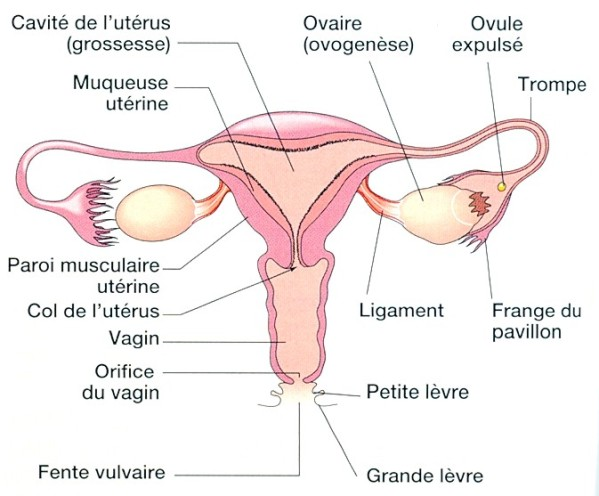

Bienvenue Sur Medical Education
Les ovaires
Definitions : Les glandes et les hormones
Les glandes
Une glande est un amas de cellules secretant une ou plusieurs hormones et formant un tissu macro et ou microscopique.
- Glande exocrine : secretion d’une ou plusieurs substances en dehors du sang.
- Glande endocrine : secretion d’une ou plusieurs hormones deversee directement dans le sang ou la lymphe.
- Glande mixte : glande ayant a la fois une secretion exocrine et une secretion endocrine.
L'hormone est une substance a action physiologique specifique secretee par une glande endocrine, et qui apres avoir ete vehiculee par le sang, va exercer un effet determine en d’autres points du corps, sur un organe cible.
- Hormones aminees : derivent toutes d’un seul acide amine, la tyrosine.
- Hormones proteiques : concernent la plupart des hormones.
- Hormones steroedes : synthetisees e partir du cholesterol.
Physiologie de l'ovaire
L'ovaire est une glande mixte :
- Fonction exocrine : production d'ovule.
- Fonction endocrine : secretion d'hormone de faeon cyclique.

Les hormones ovariennes
Il existe essentiellement deux hormones ovariennes :
- Les œstrogenes.
- La progesterone.
Les œstrogenes en phase folliculaire sont fabriques par la granulosa des follicules en croissance.
Ils preparent l'organisme a une eventuelle fecondation et implantation d'un œuf. Ils agissent sur les canaux galactophores, la croissance de la muqueuse de l'endometre, l'augmentation de la secretion de la glaire cervicale et l'augmentation de l'activite des cils des trompes de Fallope.
Le cycle menstruel est l'ensemble des modifications de l'appareil genital feminin, du 1er jour des regles jusqu'au 1er jour des regles a venir. Le cycle menstruel dure 28 jours, les regles de 3 a 6 jours.
La progesterone
La progesterone en phase luteale est fabriquee par le corps jaune. Sa secretion maximale se fait 7 jours apres l'ovulation.
Elle agit sur l'epaississement de l'endometre avec proliferation des vaisseaux et multiplication des arteres, l'epaississement de la glaire cervicale pour empecher la remontee des autres spermatozoedes, l'inhibition de la contractilite du myometre et favorise l'augmentation de la temperature.
Les connexions hypothalamo-hypophysaire de l'ovaire
L'hypothalamus secrete de faeon pulsatile et episodique (toute l'heure) une hormone, la GnRH.
La GnRH agit sur l'hypothalamus pour stimuler la secretion des hormones hypophysaires : LH et FSH.
- FSH : intervient dans la maturation des follicules et stimule la secretion d'œstrogene.
- LH : declenche l'ovulation grece a un "pic de secretion", puis provoque la transformation du follicule en corps jaune.
Une stimulation hypophysaire par les hormones, provoque une secretion ovarienne qui agit sur la muqueuse.

Le cycle hormonal de l'ovaire

Phase folliculaire
- Du 1er au 14e jour du cycle : la maturation folliculaire s'effectue sous l'influence de la FSH hypophysaire qui est declenchee par la GnRH hypothalamique :
- Le taux d'œstrogene est tres bas, ce qui provoque par retrocontrele, la secretion de FSH. Ceci permet le developpement du follicule.
- Au fur et a mesure de la maturation du follicule, ses cellules secretent des œstrogenes qui entraenent des modifications des muqueuses uterine et vaginale. Ils agissent egalement sur la secretion de GnRH qui provoque a son tour la secretion de LH hypophysaire.
- L'augmentation du taux d'œstrogene s'accompagne donc d'une augmentation lente et faible du taux de LH.
- Au 14e jour du cycle, la secretion de LH hypophysaire atteint un pic qui determine l'ovulation : rupture du follicule et liberation de l'ovocyte.
- Le taux de FSH diminue, parallelement, le taux de LH augmente.
- La LH permet le developpement du corps jaune qui secrete simultanement œstrogene et progesterone qui commandent les transformations des muqueuses uterine et vaginale.
- En l'absence de fecondation, il y a une degenerescence du corps jaune et donc une diminution du taux de progesterone.
- Cette chute hormonale, provoque la destruction du developpement de la muqueuse de l'endometre, c'est la survenue des regles.
La progesterone en phase luteale est fabriquee par le corps jaune. Sa secretion maximale se fait 7 jours apres l'ovulation.
Elle agit sur l'epaississement de l'endometre avec proliferation des vaisseaux et multiplication des arteres, l'epaississement de la glaire cervicale pour empecher la remontee des autres spermatozoedes, l'inhibition de la contractilite du myometre et favorise l'augmentation de la temperature.

Voir aussi :